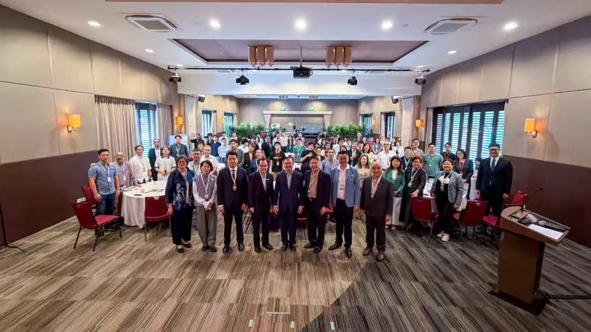

↗
↗Jiazi Village · Lijiang
Building spaces, systems & community.
Transforming traditional village spaces into functioning hubs through design, budgeting, procurement, contractors, operations and community activation.
I build spaces, connect cultures and turn ideas into working programmes across borders.

My work sits between places, cultures and execution—building the structures that allow people with different perspectives to create something together.
International-facing communication, cultural exchange and community engagement.
Village revitalisation, operational spaces, cultural programmes and international visitors.
International coordination, stakeholders, volunteers and participant experience.
Not isolated deliverables, but living systems—spaces, programmes and relationships that had to work under real constraints.
↗Transforming traditional village spaces into functioning hubs through design, budgeting, procurement, contractors, operations and community activation.

↗Cross-regional programme coordination with 20 volunteers.
 ↗
↗Connecting Lijiang's cultural stories with an international audience in Malaysia.
 ↗
↗Community programme delivery through culture, participation and place.
I create structure from ambiguity and move ideas from concept into physical, usable reality.
I bridge people, cultures and priorities so international collaboration can move with clarity.
I build the budgets, SOPs, workflows and coordination systems that keep good ideas working.

I graduated from Monash University in 2024 with a background in science, but my journey since then has taken me far beyond the familiar. Driven by curiosity, I began exploring different ways of living and working, travelling across cities and countries, immersing myself in different cultures, and connecting with people from all walks of life.
The people I meet, places I experience and cultures I encounter constantly inspire new ideas. For me, there is something deeply fulfilling about taking those ideas and bringing them into real life.
Along the way, I realised that work is about more than earning a living. It is an opportunity to create meaningful change—for myself, for others and for the world around me. I believe the deepest relationships don't begin with business, but with exchanging values, perspectives and life experiences—and discovering what resonates between us.


I’m open to project management, operations, business development and cross-cultural opportunities where ideas, people and execution need to come together.
START A CONVERSATION ↗